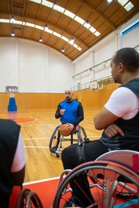

After years of feeling like there must be more to life and asking myself how I can live a more enjoyable and fulfilling life, I was introduced to The Millionaire Fastlane, and from this book, I work daily on the 3 aspects that the author, MJ DeMarco, believes contributes to "Real Wealth", namely:
- Fitness (health),
- Family (relationships), and
- Freedom (through financial freedom)
In addition to this, I have also been using self-hypnosis audio tracks from Hypnosis Live to support me on my journey.
Fitness (health)
The self-hypnosis audio tracks that I have found helpful in supporting me to improve my health and fitness include (among others):
Family (relationships)
The self-hypnosis audio tracks that I have found helpful in supporting me to improve my relationships include (among others):
Freedom (through fiancial freedom)
The self-hypnosis audio tracks that I have found helpful in supporting me to improve my freedom include (among others):